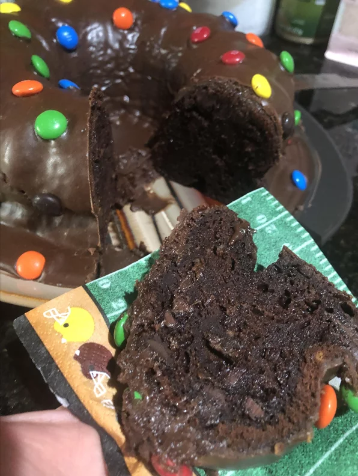

Chocolate Cake

Here we have a great recipe to make a delicious chocolate cake using the best homemade recipe.
Ingredients
- 1 (18.25 ounce) package devil's food cake mix
- 1 (3.9 ounce) package instant chocolate pudding mix
- 1 cup sour cream
- ¾ cup vegetable oil
- ¾ cup water
- 4 eggs
- 1 cup semisweet chocolate chips
- 1 (16 ounce) package prepared chocolate frosting
- 2 tablespoons candy-coated milk chocolate pieces or as desired
Steps
- Preheat the oven to 350 degrees F (175 degrees C). Grease and flour a 9-inch fluted tube cake pan
- Combine cake mix and pudding mix in a mixing bowl using an electric mixer. Add sour cream, vegetable oil, and water; mix well. Add eggs, 1 at a time, beating well after each addition. Stir in chocolate chips. Pour batter into the prepared pan.
- Bake in the preheated oven until a toothpick inserted into the center comes out clean, 55 to 60 minutes. Let cool for 10 minutes. Transfer to a cake plate and let cool completely, 20 to 30 minutes more.
- Place opened frosting container in a microwave on medium heat, stirring every 30 seconds until just soft enough to pour. Drizzle frosting over cake and sprinkle candy-coated milk chocolate pieces on top.